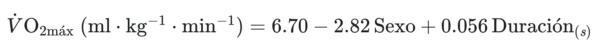
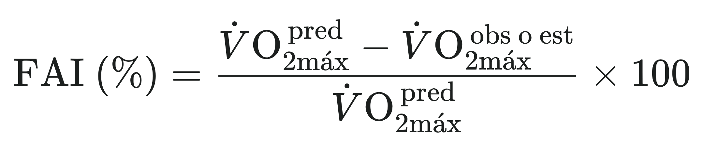
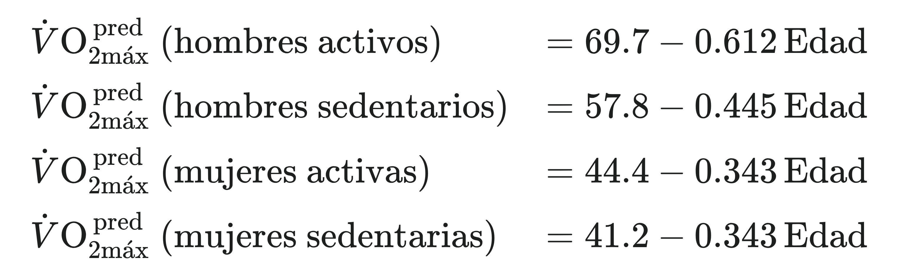

Test de Bruce en cinta ergométrica
Prueba máxima multiestadio — Bruce, Kusumi y Hosmer (1973)
1. Lista de chequeo — material y preparación
Para el examinador
Para el paciente/participante
2. Valoración pre-test
3. PAR-Q
Cuestionario de aptitud para la actividad física: identifica factores de riesgo que podrían contraindicar la realización de la prueba antes de someter al participante a esfuerzo físico.
4. Consentimiento informado
Tratamiento de datos personales
Autorizo el uso de los datos personales y clínicos solicitados en este formulario exclusivamente para los fines de esta prueba: la valoración pre-test, el cálculo del VO₂máx y la generación de los documentos de consentimiento y reporte en formato PDF. El tratamiento de estos datos se rige por la Ley 1581 de 2012 y el Decreto 1377 de 2013, marco general de protección de datos personales en Colombia.
Esta página funciona completamente en el navegador de quien la usa: ningún dato ingresado se envía a un servidor ni se almacena en ninguna base de datos. La información solo está disponible en pantalla mientras dura la prueba y se pierde automáticamente al cerrar o recargar la página. Una vez generados los PDF de consentimiento y de reporte, no queda ningún dato almacenado en la página; la única copia que existe es la que se descarga en ese momento.
5. Hoja de registro del test
Protocolo multiestadio continuo: estadios de 3 minutos, sin pausas entre ellos, con aumento de velocidad e inclinación hasta el límite de fatiga o la aparición de síntomas o signos limitantes. Registre FC, TA y ECG/síntomas en el último minuto de cada estadio, y la TA y el ECG también durante 5 minutos de recuperación sentado. La escala de Borg es un complemento y no forma parte del protocolo original.
Ecuación utilizada (Bruce y cols., 1973 — ecuación 7, personas sanas)

Sexo = factor de ponderación del artículo: 1 = hombre, 2 = mujer (distinto de la codificación 1/0 de otros tests de esta página). Duración = tiempo total del ejercicio desde el inicio del estadio I, en segundos.
Deterioro aeróbico funcional (FAI) — ecuación 1 y ecuaciones 3 a 6


VO₂máx predicho en ml·kg⁻¹·min⁻¹ y edad en años. Las ecuaciones 3 a 6 se derivaron en personas sanas de 29 a 73 años. Para hombres con enfermedad cardiovascular, el artículo propone otra relación duración-VO₂máx (ecuación 8: 10,5 + 0,035 × segundos), que no está implementada en esta página.
VO₂máx estimado (ecuación 7)
— ml·kg⁻¹·min⁻¹
≈ — MET · SEE ±3,22; r = 0,920
VO₂máx directo (medido)
— ml·kg⁻¹·min⁻¹
No se registró medición directa.
Deterioro aeróbico funcional (FAI)
— %
² Bruce RA, Kusumi F, Hosmer D. Maximal oxygen intake and nomographic assessment of functional aerobic impairment in cardiovascular disease. Am Heart J. 1973;85(4):546-62. PMID: 4632004. doi:10.1016/0002-8703(73)90502-4.
³ American College of Sports Medicine. ACSM's Guidelines for Exercise Testing and Prescription. 12.ª ed. Philadelphia: Wolters Kluwer; 2025. ISBN 978-1-9752-1921-5. (Tabla de contraindicaciones absolutas y relativas para la prueba de esfuerzo.)